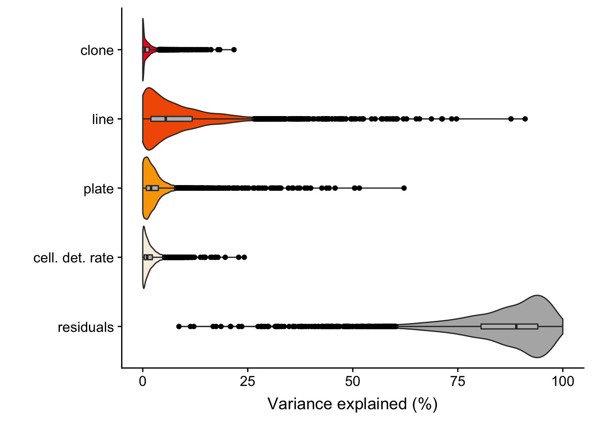
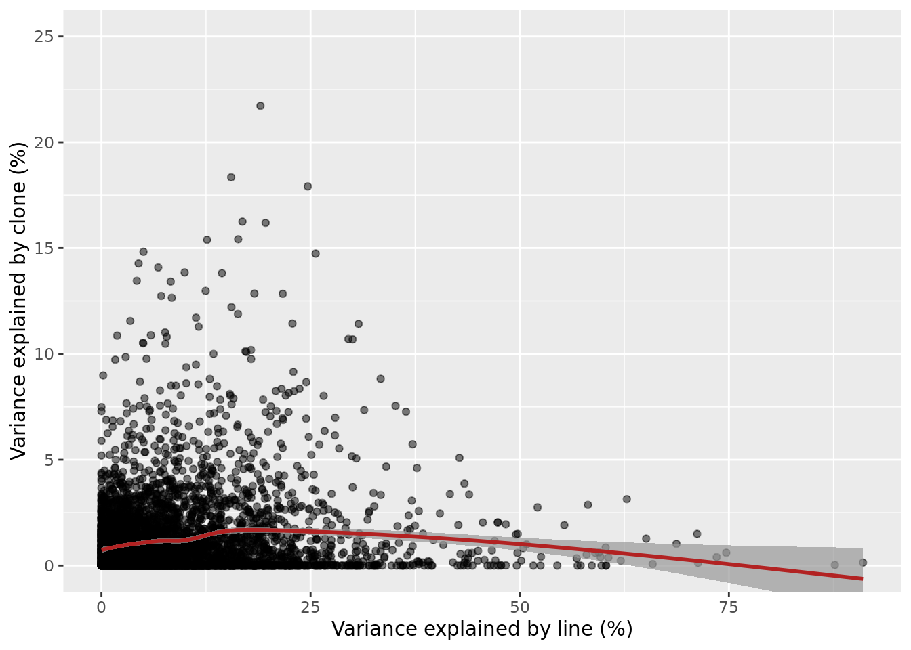
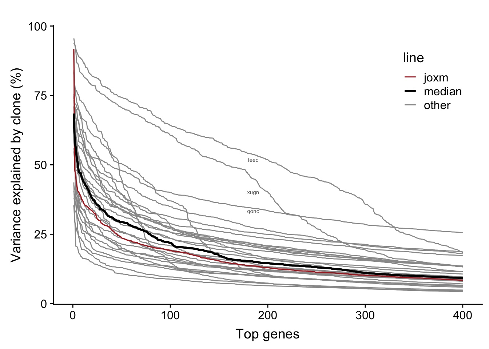

Variance components analysis
Yuanhua Huang & Davis J. McCarthy
Last updated: 2018-08-27
workflowr checks: (Click a bullet for more information)-
✔ R Markdown file: up-to-date
Great! Since the R Markdown file has been committed to the Git repository, you know the exact version of the code that produced these results.
-
✔ Environment: empty
Great job! The global environment was empty. Objects defined in the global environment can affect the analysis in your R Markdown file in unknown ways. For reproduciblity it’s best to always run the code in an empty environment.
-
✔ Seed:
set.seed(20180807)The command
set.seed(20180807)was run prior to running the code in the R Markdown file. Setting a seed ensures that any results that rely on randomness, e.g. subsampling or permutations, are reproducible. -
✔ Session information: recorded
Great job! Recording the operating system, R version, and package versions is critical for reproducibility.
-
Great! You are using Git for version control. Tracking code development and connecting the code version to the results is critical for reproducibility. The version displayed above was the version of the Git repository at the time these results were generated.✔ Repository version: 678546d
Note that you need to be careful to ensure that all relevant files for the analysis have been committed to Git prior to generating the results (you can usewflow_publishorwflow_git_commit). workflowr only checks the R Markdown file, but you know if there are other scripts or data files that it depends on. Below is the status of the Git repository when the results were generated:
Note that any generated files, e.g. HTML, png, CSS, etc., are not included in this status report because it is ok for generated content to have uncommitted changes.Ignored files: Ignored: .DS_Store Ignored: .Rhistory Ignored: .Rproj.user/ Ignored: .vscode/ Ignored: code/.DS_Store Ignored: data/raw/ Ignored: src/.DS_Store Ignored: src/.ipynb_checkpoints/ Ignored: src/Rmd/.Rhistory Untracked files: Untracked: Snakefile_clonality Untracked: Snakefile_somatic_calling Untracked: code/analysis_for_garx.Rmd Untracked: code/selection/ Untracked: code/yuanhua/ Untracked: data/canopy/ Untracked: data/cell_assignment/ Untracked: data/de_analysis_FTv62/ Untracked: data/donor_info_070818.txt Untracked: data/donor_info_core.csv Untracked: data/donor_neutrality.tsv Untracked: data/exome-point-mutations/ Untracked: data/fdr10.annot.txt.gz Untracked: data/human_H_v5p2.rdata Untracked: data/human_c2_v5p2.rdata Untracked: data/human_c6_v5p2.rdata Untracked: data/neg-bin-rsquared-petr.csv Untracked: data/neutralitytestr-petr.tsv Untracked: data/sce_merged_donors_cardelino_donorid_all_qc_filt.rds Untracked: data/sce_merged_donors_cardelino_donorid_all_with_qc_labels.rds Untracked: data/sce_merged_donors_cardelino_donorid_unstim_qc_filt.rds Untracked: data/sces/ Untracked: data/selection/ Untracked: data/simulations/ Untracked: data/variance_components/ Untracked: figures/ Untracked: output/differential_expression/ Untracked: output/donor_specific/ Untracked: output/line_info.tsv Untracked: output/nvars_by_category_by_donor.tsv Untracked: output/nvars_by_category_by_line.tsv Untracked: output/variance_components/ Untracked: references/ Untracked: tree.txt
Expand here to see past versions:
| File | Version | Author | Date | Message |
|---|---|---|---|---|
| html | 9ec2a59 | davismcc | 2018-08-26 | Build site. |
| html | 36acf15 | davismcc | 2018-08-25 | Build site. |
| Rmd | d618fe5 | davismcc | 2018-08-25 | Updating analyses |
| html | 090c1b9 | davismcc | 2018-08-24 | Build site. |
| html | d2e8b31 | davismcc | 2018-08-19 | Build site. |
| html | 1489d32 | davismcc | 2018-08-17 | Add html files |
| Rmd | c5c1416 | davismcc | 2018-08-17 | Adding variance components analysis. |
Load libraries
library(viridis)
library(tidyverse)
library(ggpubr)
library(ggrepel)
library(cowplot)
library(reshape2)
dir.create("figures/variance_components", showWarnings = FALSE,
recursive = TRUE)Results aggregated across all lines
Previously, we conducted variance components analysis combining scRNA-seq data across all lines. We used the variancePartion package, fitting assigned clone, line, plate (on which cells were processed) and cellular detection rate (cdr; proportion of genes per cell with non-zero expression) as random effects.
The output of the model gives us the proportion of variance explained, for each gene, by clone, line, plate, cdr and residuals.
varPart.df <- as.data.frame(
read.table("data/variance_components/fit_per_gene_highVar.csv", sep = ","))
colnames(varPart.df) <- c("clone", "line", "plate", "cdr", "residuals")
varPart.df$gene_id <- rownames(varPart.df)
varPart.df <- as_data_frame(varPart.df)
head(varPart.df)# A tibble: 6 x 6
clone line plate cdr residuals gene_id
<dbl> <dbl> <dbl> <dbl> <dbl> <chr>
1 3.54e- 3 0.0179 0.0216 0.0124 0.945 ENSG00000001167_NFYA
2 0. 0.167 0.0215 0.0354 0.776 ENSG00000001626_CFTR
3 0. 0.00580 0.0143 0.000248 0.980 ENSG00000001629_ANKIB1
4 5.35e- 3 0.0194 0.0215 0.0152 0.939 ENSG00000001631_KRIT1
5 9.73e-15 0.369 0.00582 0.0336 0.592 ENSG00000002016_RAD52
6 0. 0.125 0.0827 0.0143 0.778 ENSG00000002330_BAD We ran the analysis for 4998 highly variable genes (as identified using methods in the scran package).
We detect 194 genes with more than 5% of variance explained by clone and 1034 genes for which variance explained by clone is both greater than 1% and also greater than the variance explained by plate (a good proxy for technical effects on variability in gene expression between cells).
varPart.mel <- tidyr::gather(varPart.df, key = "variable", value = "value",
-gene_id)dat_dir <- "data/variance_components/donorVar/"
fig.violin <- varPart.mel %>%
dplyr::mutate(variable = replace(variable, variable == "cdr",
"cell. det. rate")) %>%
dplyr::mutate(variable = factor(variable,
levels = c("residuals", "cell. det. rate",
"plate", "line", "clone"))) %>%
ggplot(aes(x = variable, y = 100 * value)) +
geom_violin(aes(fill = variable), scale = "width") +
geom_boxplot(width = 0.07, fill = "grey", outlier.colour = "black") +
ylab("Variance explained (%)") +
xlab("") +
scale_fill_manual(values = c("gray70", "#f7efe2", "#f9a603", "#f25c00",
"#f70025")) +
coord_flip() +
theme(legend.position = "none") +
theme(plot.title = element_text(hjust = 0.5))
ggsave("figures/variance_components/varpart_violin_alllines.png",
fig.violin, height = 4, width = 6.5, dpi = 300)
ggsave("figures/variance_components/varpart_violin_alllines.pdf",
fig.violin, height = 4, width = 6.5, dpi = 300)
ggsave("figures/variance_components/varpart_violin_alllines_skinny.png",
fig.violin, height = 4, width = 4.5, dpi = 300)
ggsave("figures/variance_components/varpart_violin_alllines_skinny.pdf",
fig.violin, height = 4, width = 4.5, dpi = 300)
fig.violin
Expand here to see past versions of unnamed-chunk-4-1.png:
| Version | Author | Date |
|---|---|---|
| d2e8b31 | davismcc | 2018-08-19 |
# plotVarPart( varPart_mat )
# idx_order <- order(varPart_mat$clone, decreasing = TRUE)
# plotPercentBars( varPart_mat[idx_order[1:10],] )Plot line component against clone component
varPart.df %>%
ggplot(aes(x = 100 * line, y = 100 * clone)) +
geom_point(alpha = 0.5) +
geom_smooth(colour = "firebrick", alpha = 0.7) +
coord_cartesian(ylim = c(0, 25)) +
xlab("Variance explained by line (%)") +
ylab("Variance explained by clone (%)")
Expand here to see past versions of unnamed-chunk-6-1.png:
| Version | Author | Date |
|---|---|---|
| d2e8b31 | davismcc | 2018-08-19 |
Results for individual lines
Load individual lines
We load a SingleCellExperiment object for each line containing expression data, cell metadata and gene metadata.
params <- list()
params$callset <- "filt_lenient.cell_coverage_sites"
lines <- c("euts", "fawm", "feec", "fikt", "garx", "gesg", "heja", "hipn",
"ieki", "joxm", "kuco", "laey", "lexy", "naju", "nusw", "oaaz",
"oilg", "pipw", "puie", "qayj", "qolg", "qonc", "rozh", "sehl",
"ualf", "vass", "vuna", "wahn", "wetu", "xugn", "zoxy")
## Load SCE objects
sce_unst_list <- list()
for (don in lines) {
sce_unst_list[[don]] <- readRDS(file.path("data/sces/",
paste0("sce_", don, "_with_clone_assignments.", params$callset, ".rds")))
cat(paste("reading", don, ": ", ncol(sce_unst_list[[don]]), "cells\n"))
}reading euts : 79 cells
reading fawm : 53 cells
reading feec : 75 cells
reading fikt : 39 cells
reading garx : 70 cells
reading gesg : 105 cells
reading heja : 50 cells
reading hipn : 62 cells
reading ieki : 58 cells
reading joxm : 79 cells
reading kuco : 48 cells
reading laey : 55 cells
reading lexy : 63 cells
reading naju : 44 cells
reading nusw : 60 cells
reading oaaz : 38 cells
reading oilg : 90 cells
reading pipw : 107 cells
reading puie : 41 cells
reading qayj : 97 cells
reading qolg : 36 cells
reading qonc : 58 cells
reading rozh : 91 cells
reading sehl : 30 cells
reading ualf : 89 cells
reading vass : 37 cells
reading vuna : 71 cells
reading wahn : 82 cells
reading wetu : 77 cells
reading xugn : 35 cells
reading zoxy : 88 cellsWe load variance component analysis results for each line.
varPart_list <- list()
for (i in seq_along(lines)) {
df <- read.csv(paste0("data/variance_components/donorVar/",
lines[i], ".var_part.var1.csv"))
colnames(df) <- c("clone", "plate", "cell. det. rate", "residuals")
df$gene_id <- rownames(df)
df$line <- lines[i]
varPart_list[[i]] <- as_data_frame(df)
}
names(varPart_list) <- linesFor each line we thus have a data.frame with the variance components results.
head(varPart_list[[1]])# A tibble: 6 x 6
clone plate `cell. det. rate` residuals gene_id line
<dbl> <dbl> <dbl> <dbl> <chr> <chr>
1 0 0.0727 0.0155 0.912 ENSG00000137804_NUSAP1 euts
2 0.165 0 0.0439 0.791 ENSG00000115318_LOXL3 euts
3 0 0.0311 0.000381 0.969 ENSG00000161888_SPC24 euts
4 0.0274 0.00157 0.0518 0.919 ENSG00000171345_KRT19 euts
5 0 0.0357 0.0222 0.942 ENSG00000089685_BIRC5 euts
6 0 0 0.00906 0.991 ENSG00000197061_HIST1H4C euts Number of genes with substantial clone component
We observe larger clone effects if we fit the linear mixed model for each line separately. A large number of genes for each line have >5% of variance explained by clone (median: 825).
sort(sapply(varPart_list, function(x) sum(x$clone > 0.05)))pipw vuna gesg euts oilg heja puie kuco wetu zoxy naju wahn qayj joxm qolg
331 347 382 478 532 548 559 561 566 584 609 635 651 741 760
hipn xugn fawm ualf nusw garx oaaz lexy rozh vass feec fikt ieki laey sehl
825 844 856 881 901 920 948 962 1036 1096 1102 1314 1356 1392 1651
qonc
2162 Plot results for individual lines
For each line we will plot the variance explained by clone for the to 400 genes with most variance explained by clone (for that line).
First, we need to process the raw variance component results from each line.
n_top <- 400
n_lines <- length(varPart_list)
n_hv_genes <- rep(NA, n_lines)
n_cells_use <- rep(NA, n_lines)
n_genes_use <- rep(NA, n_lines)
var_top_mean <- rep(NA, n_lines)
var_top_list <- list()
for (i in seq_len(length(varPart_list))) {
sort_idx <- order(varPart_list[[i]]$clone, decreasing = TRUE)
var_top_list[[i]] <- varPart_list[[i]][sort_idx[1:n_top], "clone",
drop = FALSE]
var_top_mean[i] <- mean(var_top_list[[i]]$clone, na.rm = TRUE)
n_hv_genes[i] <- sum(varPart_list[[i]]$clone > 0.25, na.rm = TRUE)
min_var <- 1.0
cell_idx <- which(sce_unst_list[[lines[i]]]$assigned != "unassigned")
n_cells_use[i] <- length(cell_idx)
n_genes_use[i] <- nrow(varPart_list[[i]])
}
don_sort_idx <- order(var_top_mean, decreasing = TRUE)
df.line <- data_frame(line_id = lines,
clone_cells = n_cells_use,
n_genes_use = n_genes_use,
n_hv_genes = n_hv_genes,
var_top_mean = var_top_mean)[don_sort_idx, ]
df.line <- cbind(rank = seq_len(nrow(df.line)), df.line)
var_full <- c()
idx_full <- c()
don_full <- c()
rank_full <- c()
for (ii in don_sort_idx) {
var_full <- c(var_full, var_top_list[[ii]]$clone)
idx_full <- c(idx_full, seq_len(n_top))
don_full <- c(don_full, rep(lines[ii], n_top))
rank_full <- c(rank_full, rep(ii, n_top))
}
line_info <- rep("other", length(don_full))
median_line <- lines[don_sort_idx[round(length(don_sort_idx)/2)]]
# line_info[don_full == median_line] <- "median"
line_info[don_full == "joxm"] <- "joxm"
# print(median_line)
# summary(n_hv_genes)
df <- data_frame(varPart = var_full, gene_rank = idx_full,
lines = don_full, line_rank = rank_full,
line_info = line_info)
rm(line_info)
df <- df %>%
group_by(gene_rank) %>%
summarise(varPart = median(varPart)) %>%
dplyr::mutate(lines = "median", line_info = "median", line_rank = NA) %>%
bind_rows(., df)The table below provides a summary of the per-line variance component results. We can read off the mean proportion of variance explained by clone for the top 400 genes for each line (var_top_mean), as well as other information for each line.
df.line rank line_id clone_cells n_genes_use n_hv_genes var_top_mean
1 1 feec 64 8243 342 0.50769558
2 2 xugn 34 7480 260 0.41529069
3 3 qonc 43 9882 420 0.35658891
4 4 fikt 36 9762 219 0.29630805
5 5 sehl 24 8792 198 0.27796718
6 6 ieki 26 8324 166 0.25419512
7 7 vass 37 7231 129 0.23747536
8 8 lexy 63 10154 123 0.23580397
9 9 oaaz 37 9946 105 0.22820218
10 10 nusw 20 9544 110 0.22397105
11 11 kuco 48 10021 121 0.22329573
12 12 euts 78 10210 128 0.21836347
13 13 wahn 77 10241 114 0.21728504
14 14 laey 55 7402 89 0.20944535
15 15 wetu 66 7177 79 0.20065196
16 16 hipn 49 7971 86 0.19522467
17 17 rozh 42 7819 57 0.18304904
18 18 heja 50 9315 57 0.16430667
19 19 qolg 36 8640 41 0.16297743
20 20 joxm 77 10095 45 0.15834547
21 21 garx 69 9571 25 0.15202524
22 22 pipw 107 10260 73 0.15192220
23 23 oilg 57 7875 44 0.14300906
24 24 qayj 59 6844 30 0.14024325
25 25 fawm 47 8537 17 0.13702877
26 26 ualf 88 7001 16 0.13288015
27 27 zoxy 82 6968 27 0.12433830
28 28 puie 41 8478 12 0.11222310
29 29 naju 44 9089 5 0.10986147
30 30 gesg 101 10036 5 0.08542351
31 31 vuna 71 10000 2 0.07668159Now we can plot a curve for each line showing the variance explained by clone for the top 400 genes.
df_labs <- dplyr::filter(df, gene_rank == 200) %>%
dplyr::mutate(labs = ifelse(varPart > 0.33, lines, ""))
fig.curve <- ggplot(df, aes(colour = line_info)) +
geom_line(aes(x = gene_rank, y = 100 * varPart, color = line_info,
size = line_info, group = lines)) +
scale_color_manual(values = c("firebrick", "black", "gray60"),
name = "line") +
scale_size_manual(values = c(0.5, 1, 0.5), name = "line") +
geom_line(data = df[df$lines == "joxm", ],
aes(x = gene_rank, y = 100 * varPart), size = 0.5, color = "firebrick") +
geom_line(data = df[df$lines == "median", ],
aes(x = gene_rank, y = 100 * varPart), size = 1, color = "black") +
geom_text(aes(x = gene_rank - 15, y = 100 * varPart, label = labs),
nudge_y = 0, nudge_x = 0,
data = df_labs, colour = "gray40", size = 2) +
xlab("Top genes") + ylab("Variance explained by clone (%)") +
ggtitle("") + xlim(0, 400) +
theme(legend.position = c(0.8, 0.8))
ggsave("figures/variance_components/varpart_curve_perline.png",
fig.curve, height = 4, width = 6.5, dpi = 300)
ggsave("figures/variance_components/varpart_cruve_perline.pdf",
fig.curve, height = 4, width = 6.5, dpi = 300)
ggsave("figures/variance_components/varpart_curve_perline_skinny.png",
fig.curve + theme(legend.position = c(0.7, 0.8)),
height = 4, width = 4.5, dpi = 300)
ggsave("figures/variance_components/varpart_cruve_perline_skinny.pdf",
fig.curve + theme(legend.position = c(0.7, 0.8)),
height = 4, width = 4.5, dpi = 300)
fig.curve
Expand here to see past versions of unnamed-chunk-13-1.png:
| Version | Author | Date |
|---|---|---|
| d2e8b31 | davismcc | 2018-08-19 |
Each line has a substantial number of genes with a substantial proportion of variance explained by clone. For example, the number of genes with more than 25% of variance explained by line across lines:
sapply(varPart_list, function(x) sum(x$clone > 0.25))euts fawm feec fikt garx gesg heja hipn ieki joxm kuco laey lexy naju nusw
128 17 342 219 25 5 57 86 166 45 121 89 123 5 110
oaaz oilg pipw puie qayj qolg qonc rozh sehl ualf vass vuna wahn wetu xugn
105 44 73 12 30 41 420 57 198 16 129 2 114 79 260
zoxy
27 There are a large number of genes in each line with more than 5% of variance explained by clone:
sapply(varPart_list, function(x) sum(x$clone > 0.05))euts fawm feec fikt garx gesg heja hipn ieki joxm kuco laey lexy naju nusw
478 856 1102 1314 920 382 548 825 1356 741 561 1392 962 609 901
oaaz oilg pipw puie qayj qolg qonc rozh sehl ualf vass vuna wahn wetu xugn
948 532 331 559 651 760 2162 1036 1651 881 1096 347 635 566 844
zoxy
584 Plots including line selection information
We have inferred selection dynamics from somatic variants detected from whole-exome sequencing data. We can overlay selection status on the plot above to look for any relationship between selection and variance explained by clone in top genes by line.
line_selected <- c("euts", "fawm", "fikt", "garx", "pipw", "puie", "qolg", "rozh")
line_neutral <- c("hipn", "nusw", "qonc", "sehl", "ualf", "xugn")
line_undetermined <- c("feec", "gesg", "heja", "ieki", "joxm", "kuco", "laey",
"lexy", "naju", "oaaz",
"oilg", "qayj", "vass", "vuna", "wahn", "wetu", "zoxy")
df$selection <- "undetermined"
df$selection[df$lines %in% line_neutral] <- "neutral"
df$selection[df$lines %in% line_selected] <- "selection"
df$selection[df$lines %in% "median"] <- "median"
df$selection <- factor(df$selection,
levels = c("neutral", "undetermined", "selection",
"median"))df_labs <- dplyr::filter(df, gene_rank == 200) %>%
dplyr::mutate(labs = ifelse(varPart > 0.33, lines, ""))
fig.curve <- ggplot(df, aes(colour = selection)) +
geom_line(aes(x = gene_rank, y = 100 * varPart, color = selection,
size = selection, group = lines)) +
scale_color_manual(values = c("dodgerblue", "#CCCCCC", "dodgerblue4",
"black"), name = "selection\ndynamics") +
scale_size_manual(values = c(0.5, 0.5, 0.5, 1), name = "selection\ndynamics") +
geom_line(data = df[df$lines == "median", ],
aes(x = gene_rank, y = 100 * varPart), size = 1, color = "black") +
geom_text(aes(x = gene_rank - 15, y = 100 * varPart, label = labs),
nudge_y = 0, nudge_x = 0,
data = df_labs, colour = "gray40", size = 2) +
xlab("Top genes") + ylab("Variance explained by clone (%)") +
ggtitle("") + xlim(0, 400) +
theme(legend.position = c(0.8, 0.8))
fig.curve
Expand here to see past versions of unnamed-chunk-17-1.png:
| Version | Author | Date |
|---|---|---|
| d2e8b31 | davismcc | 2018-08-19 |
There is not any obvious relationship between selection dynamics and variance explained by clone here.
Write mean variance explained to file
Write a table with the mean fraction of variance explained by clone for the top 400 genes per line out to file.
idx <- order(var_top_mean, decreasing = TRUE)
line_var_df <- data.frame(line = lines[idx],
meanFraction400 = var_top_mean[idx])
write.csv(line_var_df, "output/variance_components/line_var_top400.csv")Session information
devtools::session_info()Session info ------------------------------------------------------------- setting value
version R version 3.5.1 (2018-07-02)
system x86_64, darwin15.6.0
ui X11
language (EN)
collate en_GB.UTF-8
tz Europe/London
date 2018-08-27 Packages ----------------------------------------------------------------- package * version date source
assertthat 0.2.0 2017-04-11 CRAN (R 3.5.0)
backports 1.1.2 2017-12-13 CRAN (R 3.5.0)
base * 3.5.1 2018-07-05 local
bindr 0.1.1 2018-03-13 CRAN (R 3.5.0)
bindrcpp * 0.2.2 2018-03-29 CRAN (R 3.5.0)
Biobase * 2.40.0 2018-05-01 Bioconductor
BiocGenerics * 0.26.0 2018-05-01 Bioconductor
BiocParallel * 1.14.2 2018-07-08 Bioconductor
bitops 1.0-6 2013-08-17 CRAN (R 3.5.0)
broom 0.5.0 2018-07-17 CRAN (R 3.5.0)
cellranger 1.1.0 2016-07-27 CRAN (R 3.5.0)
cli 1.0.0 2017-11-05 CRAN (R 3.5.0)
colorspace 1.3-2 2016-12-14 CRAN (R 3.5.0)
compiler 3.5.1 2018-07-05 local
cowplot * 0.9.3 2018-07-15 CRAN (R 3.5.0)
crayon 1.3.4 2017-09-16 CRAN (R 3.5.0)
datasets * 3.5.1 2018-07-05 local
DelayedArray * 0.6.5 2018-08-15 Bioconductor
devtools 1.13.6 2018-06-27 CRAN (R 3.5.0)
digest 0.6.16 2018-08-22 CRAN (R 3.5.0)
dplyr * 0.7.6 2018-06-29 CRAN (R 3.5.1)
evaluate 0.11 2018-07-17 CRAN (R 3.5.0)
fansi 0.3.0 2018-08-13 CRAN (R 3.5.0)
forcats * 0.3.0 2018-02-19 CRAN (R 3.5.0)
GenomeInfoDb * 1.16.0 2018-05-01 Bioconductor
GenomeInfoDbData 1.1.0 2018-04-25 Bioconductor
GenomicRanges * 1.32.6 2018-07-20 Bioconductor
ggplot2 * 3.0.0 2018-07-03 CRAN (R 3.5.0)
ggpubr * 0.1.7 2018-06-23 CRAN (R 3.5.0)
ggrepel * 0.8.0 2018-05-09 CRAN (R 3.5.0)
git2r 0.23.0 2018-07-17 CRAN (R 3.5.0)
glue 1.3.0 2018-07-17 CRAN (R 3.5.0)
graphics * 3.5.1 2018-07-05 local
grDevices * 3.5.1 2018-07-05 local
grid 3.5.1 2018-07-05 local
gridExtra 2.3 2017-09-09 CRAN (R 3.5.0)
gtable 0.2.0 2016-02-26 CRAN (R 3.5.0)
haven 1.1.2 2018-06-27 CRAN (R 3.5.0)
hms 0.4.2 2018-03-10 CRAN (R 3.5.0)
htmltools 0.3.6 2017-04-28 CRAN (R 3.5.0)
httr 1.3.1 2017-08-20 CRAN (R 3.5.0)
IRanges * 2.14.11 2018-08-24 Bioconductor
jsonlite 1.5 2017-06-01 CRAN (R 3.5.0)
knitr 1.20 2018-02-20 CRAN (R 3.5.0)
labeling 0.3 2014-08-23 CRAN (R 3.5.0)
lattice 0.20-35 2017-03-25 CRAN (R 3.5.1)
lazyeval 0.2.1 2017-10-29 CRAN (R 3.5.0)
lubridate 1.7.4 2018-04-11 CRAN (R 3.5.0)
magrittr * 1.5 2014-11-22 CRAN (R 3.5.0)
Matrix 1.2-14 2018-04-13 CRAN (R 3.5.1)
matrixStats * 0.54.0 2018-07-23 CRAN (R 3.5.0)
memoise 1.1.0 2017-04-21 CRAN (R 3.5.0)
methods * 3.5.1 2018-07-05 local
mgcv 1.8-24 2018-06-23 CRAN (R 3.5.1)
modelr 0.1.2 2018-05-11 CRAN (R 3.5.0)
munsell 0.5.0 2018-06-12 CRAN (R 3.5.0)
nlme 3.1-137 2018-04-07 CRAN (R 3.5.1)
parallel * 3.5.1 2018-07-05 local
pillar 1.3.0 2018-07-14 CRAN (R 3.5.0)
pkgconfig 2.0.2 2018-08-16 CRAN (R 3.5.0)
plyr 1.8.4 2016-06-08 CRAN (R 3.5.0)
purrr * 0.2.5 2018-05-29 CRAN (R 3.5.0)
R.methodsS3 1.7.1 2016-02-16 CRAN (R 3.5.0)
R.oo 1.22.0 2018-04-22 CRAN (R 3.5.0)
R.utils 2.6.0 2017-11-05 CRAN (R 3.5.0)
R6 2.2.2 2017-06-17 CRAN (R 3.5.0)
Rcpp 0.12.18 2018-07-23 CRAN (R 3.5.0)
RCurl 1.95-4.11 2018-07-15 CRAN (R 3.5.0)
readr * 1.1.1 2017-05-16 CRAN (R 3.5.0)
readxl 1.1.0 2018-04-20 CRAN (R 3.5.0)
reshape2 * 1.4.3 2017-12-11 CRAN (R 3.5.0)
rlang 0.2.2 2018-08-16 CRAN (R 3.5.0)
rmarkdown 1.10 2018-06-11 CRAN (R 3.5.0)
rprojroot 1.3-2 2018-01-03 CRAN (R 3.5.0)
rstudioapi 0.7 2017-09-07 CRAN (R 3.5.0)
rvest 0.3.2 2016-06-17 CRAN (R 3.5.0)
S4Vectors * 0.18.3 2018-06-08 Bioconductor
scales 1.0.0 2018-08-09 CRAN (R 3.5.0)
SingleCellExperiment * 1.2.0 2018-05-01 Bioconductor
stats * 3.5.1 2018-07-05 local
stats4 * 3.5.1 2018-07-05 local
stringi 1.2.4 2018-07-20 CRAN (R 3.5.0)
stringr * 1.3.1 2018-05-10 CRAN (R 3.5.0)
SummarizedExperiment * 1.10.1 2018-05-11 Bioconductor
tibble * 1.4.2 2018-01-22 CRAN (R 3.5.0)
tidyr * 0.8.1 2018-05-18 CRAN (R 3.5.0)
tidyselect 0.2.4 2018-02-26 CRAN (R 3.5.0)
tidyverse * 1.2.1 2017-11-14 CRAN (R 3.5.0)
tools 3.5.1 2018-07-05 local
utf8 1.1.4 2018-05-24 CRAN (R 3.5.0)
utils * 3.5.1 2018-07-05 local
viridis * 0.5.1 2018-03-29 CRAN (R 3.5.0)
viridisLite * 0.3.0 2018-02-01 CRAN (R 3.5.0)
whisker 0.3-2 2013-04-28 CRAN (R 3.5.0)
withr 2.1.2 2018-03-15 CRAN (R 3.5.0)
workflowr 1.1.1 2018-07-06 CRAN (R 3.5.0)
xml2 1.2.0 2018-01-24 CRAN (R 3.5.0)
XVector 0.20.0 2018-05-01 Bioconductor
yaml 2.2.0 2018-07-25 CRAN (R 3.5.1)
zlibbioc 1.26.0 2018-05-01 Bioconductor This reproducible R Markdown analysis was created with workflowr 1.1.1